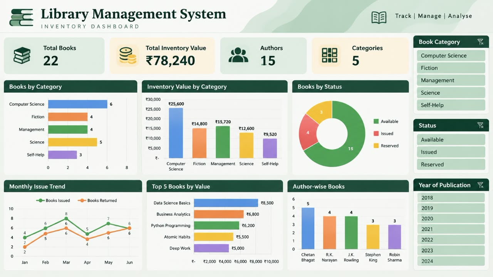
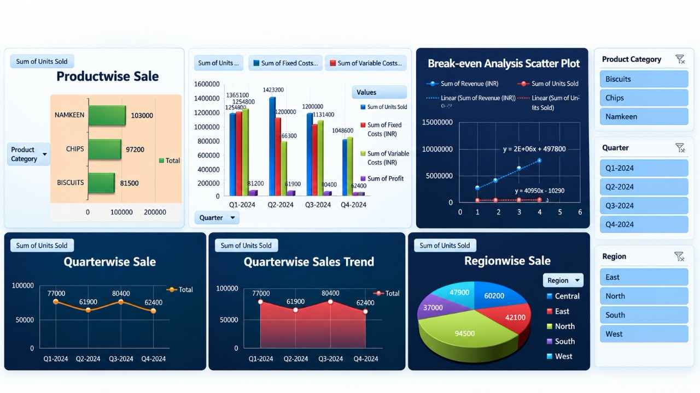

Projects
Academic and independent work that shows how I analyse and present data.
Academic Project
Library Management Dashboard (Excel)
MBA, IILM University | Individual project

Context
A practical Excel project to show how a small library could track its inventory and book circulation in one interactive view.
My contribution
- Built the dashboard on 22 books with a total inventory value of about ₹78K, 15 authors and 5 categories.
- Used formulas and pivot tables to track issued, available and reserved books.
- Added slicers for category, status and year of publication, with charts for books by category, value by category, status, monthly issue trend and top books by value.
Outcome and learning
I learnt how to turn a plain table into a dashboard a non-technical person can use. I also learnt to choose charts according to the question being answered so that trends and comparisons are easy to understand.
Note: the dashboard image shows sample data created for the project.
Academic Project
Sales & Break-even Analysis Dashboard (Excel)
MBA, IILM University | Excel practical project

Context
An interactive sales dashboard for a snack-products dataset (Biscuits, Chips, Namkeen) to analyse performance by region, area and category.
My contribution
- Built product-wise, quarter-wise and region-wise sales views using slicers and filters.
- Compared units sold with fixed costs, variable costs and profit by quarter.
- Added a break-even scatter plot with trendlines.
Outcome and learning
This project taught me to connect sales numbers with cost structure, not just report totals. Comparing sales, costs and profit helped me understand how dashboards can support practical business decisions.
Note: the dashboard image shows sample data created for the project.
Academic Project
Front-end Website for an NGO
Individual project | HTML & CSS
Context
I designed a front-end website for an NGO as an academic project, and used it for presentations and documentation.
My contribution
Planned the layout and wrote the pages in HTML and CSS, with a focus on clear navigation, readable content and a consistent visual structure. I am proud of creating a simple front-end experience that presents the organisation and its work clearly.
Creative Work
Posters and Event Design
Creative projects | Canva, PicsArt
I designed posters and supported event decoration planning using Canva and PicsArt, focusing on visual hierarchy, readable messaging and consistent presentation.